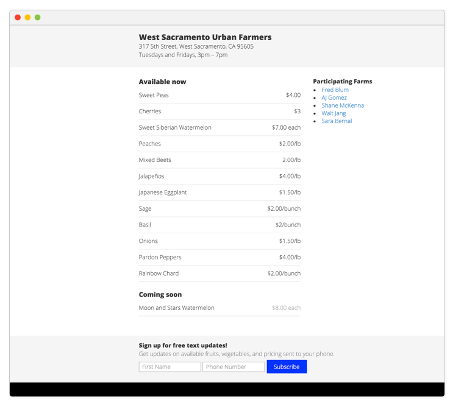
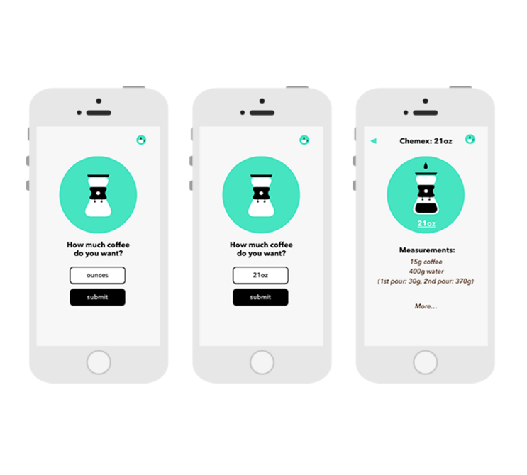

Acres
This civic project raised awareness about the opportunities for aspiring farmers to start urban farms.visit webapp
Role: developer
Tools: angularJs and python flask

Color Chart
This is a very cool tool for getting the most basic css colors, the one that can be called by name.visit webapp
Role: developer
Tools: angularJs and flash

Farmers
This tool recolect what urban farmers are producing and serve this data via a web and twilio appvisit webapp
Role: developer
Tools: twilio and python flask

Make Me Coffee
Small coffee calculator for iOS which help you calculate the amount of coffee and water for drip, french press and pour over coffee.visit webapp
Role: developer
Tools: swift and objective-c

Cuadras de Albers
This is a creative project which mixes two dimensional code drawing with sound.visit webapp
Role: developer
Tools: twoJs and howlingJs